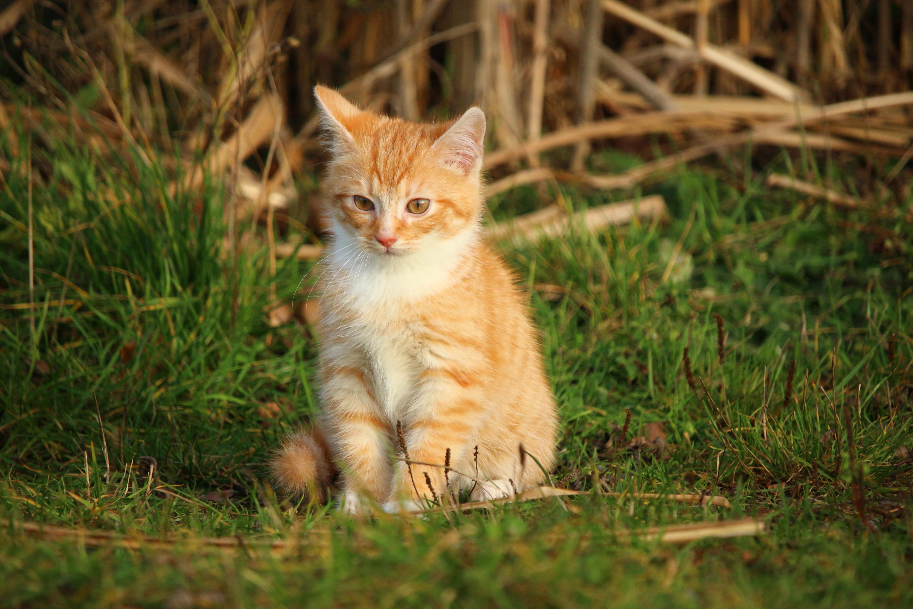
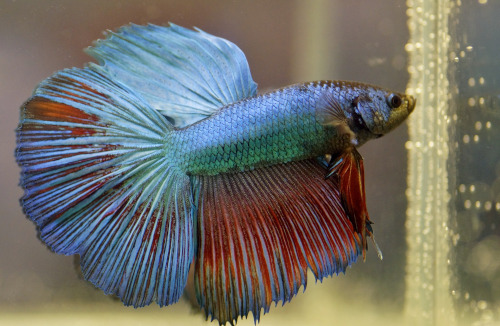
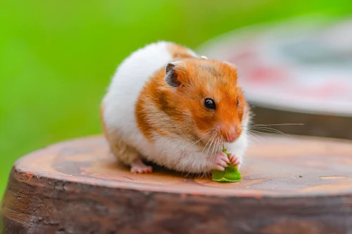
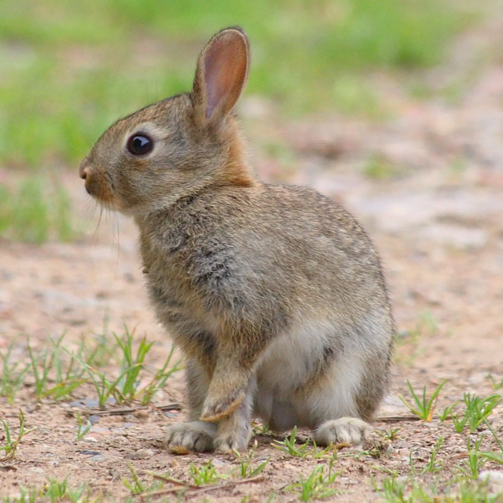
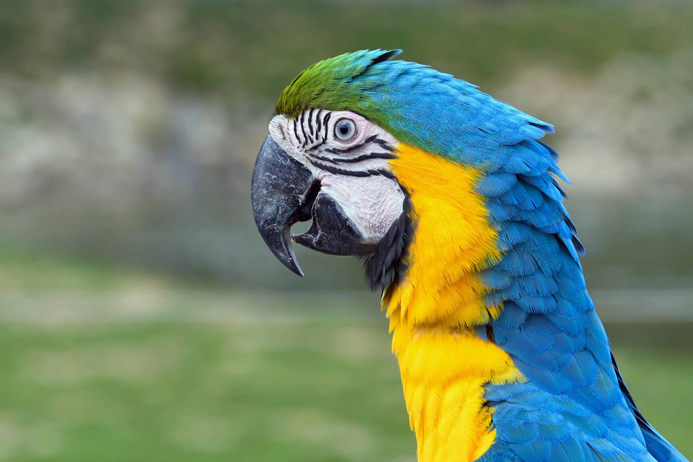
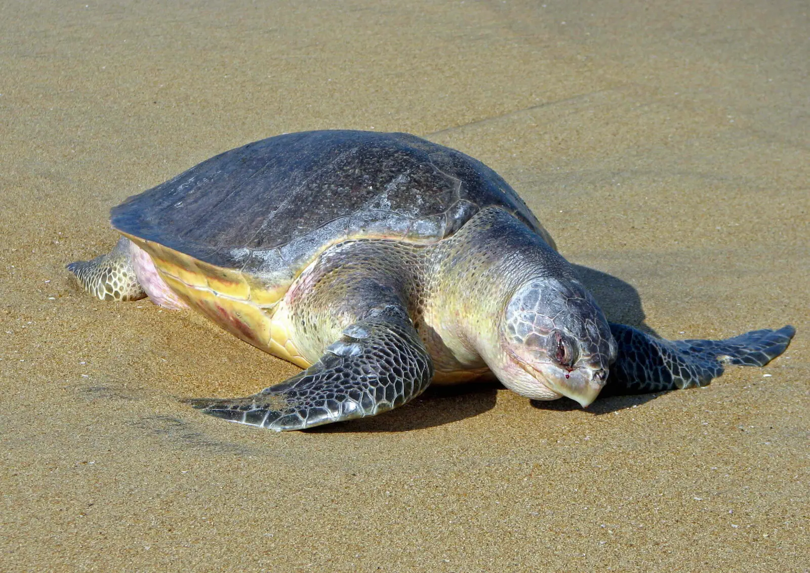

Vamos conhecer alguns dos animais domésticos mais comuns que vivem conosco!
Cachorro
O cachorro é conhecido como o melhor amigo do homem. Eles são leais, amorosos e proporcionam companhia e segurança aos seus donos.
Gato

Os gatos são animais independentes e curiosos. Eles são conhecidos por sua habilidade de caça e por serem ótimos companheiros para quem gosta de um animal mais tranquilo.
Peixe

Os peixes são animais aquáticos que podem ser mantidos em aquários. Eles são conhecidos por sua variedade de cores e formas, além de serem relativamente fáceis de cuidar.
Hamster

Os hamsters são pequenos roedores que são populares como animais de estimação devido ao seu tamanho compacto e personalidade amigável. Eles são ativos e gostam de explorar seu ambiente.
Coelho

Os coelhos são animais sociais e afetuosos que gostam de companhia. Eles são conhecidos por suas orelhas longas e sua habilidade de saltar grandes distâncias.
Papagaio

Os papagaios são aves inteligentes e coloridas que podem aprender a imitar sons e palavras. Eles são sociais e gostam de interagir com seus donos.
Tartaruga

As tartarugas são répteis conhecidos por sua carapaça dura que as protege de predadores. Elas são animais tranquilos e podem viver tanto em ambientes aquáticos quanto terrestres.